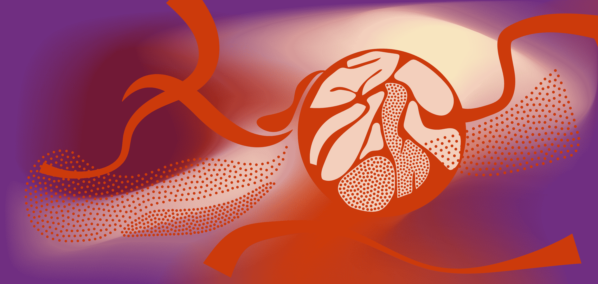

1. Red blood cells are the vertebrate's principal means of delivering oxygen to the body tissues
2. White cell support protecting of body against both infectious disease and foreign invaders
3. Platelet are a component of blood whose function is to react to bleeding from blood vessel injury by clumping, thereby initiating a blood clot.
Bone Marrow is soft, spongy tissue found inside some of the body's bones, such as legs, arms and hips. Bone Marrow is the body's 'stem cell factory’. Stem cells are vital cells which go on to create the body’s blood cells; platelets, red blood cells and white blood cells, the primary agents of the body's immune system. .
The bone marrow also produces and releases more white blood cells in response to infections, and more platelets in response to bleeding. If a person experiences serious blood loss, yellow bone marrow can be activated and transformed into red bone marrow.